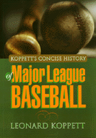

<body bgcolor="#FFFFFF" text="#000000" link="#0000FF" vlink="#CC0000" alink="#CC0000"><center><hr width="350" size="1" align="center" noshade>The one book to own to understand the changes in baseball-the-game and baseball-the-business<hr width="350" size="1" align="center" noshade><p><a href="https://cdcshoppingcart.uchicago.edu/Cart/ChicagoBook.aspx?ISBN=9781566396387&&PRESS=temple" target="_top">Buy this book!</a> | <a href="https://cdcshoppingcart.uchicago.edu/Cart/Cart.aspx?PRESS=temple" target="_top">View Cart</a> | <a href="https://cdcshoppingcart.uchicago.edu/Cart/Cart.aspx?PRESS=temple" target="_top">Check Out</a></p><p></p></center><!--none//--><h1>Koppett's Concise History of Major League Baseball</h1>
<h3>Leonard Koppett</h3>
<P>cloth 1-56639-638-7 $36.95, Sep 98, <FONT COLOR=#990033>Out of Stock Unavailable</FONT>
<BR> 521 pp
7x10
26&nbsp;tables
</P><h3 align="center"><P><font color="#996633">Nominee, Seymour Medal,
1999</font></P>
</H3>
<BLOCKQUOTE><I>"No one knows, understands, and interprets the history of major-league baseball so well as Leonard Koppett. He is a student of the game, and of most other aspects of life, and he knows how the one fits into the other. He also knows how to research, how to report, and how to write. He is perfectly equipped to write a rich, readable and reasonable history of the game."</I>
<br>&#151<b>Dick Schaap</b>, <I>ABC News</I><I></I></BLOCKQUOTE>
<p><I>Koppett's Concise History</I> provides an overview and explanation of all the major events and personalities that made baseball America's national game.
<p>As early as the 1880s, many basic baseball strategies-pitching high and tight or low and away; first basemen lining up well wide of the base they were "covering"; throwing breaking balls and change-ups; bunting as well as swinging away-were already in use. But the history of the game is a story of changes that have been controversial for fans and players.
<p>Leonard Koppett takes the reader through the long-standing back-and-forth over the balance between offense and defense-dead balls versus lively balls, changes in the strike zone and mound height, and
arguments about competitive balance among teams in different eras. He explores the controversies over the introduction of night baseball, radio and TV broadcasting, the farm system, domed stadiums, the expansion draft to create ten-team leagues, divisional play-offs, franchise moves to new cities, and interleague play.
<p>How baseball as business affects the nature of the game is an issue throughout the book. Whether he's talking about free agency, strike actions, or the policies of different commissioners and owners, Koppett is
never afraid to say whose interests are being served.
<p>A major portion of each chapter is devoted to Koppett's lively narratives of the shape and significance of each season from 1892 through 1995. On each point, Koppett has the facts, the stories, and an opinion
about what works for the game and what doesn't.
<BR>&nbsp;<h2>Contents</h2><P>
<p>Introduction: The Premise
<p><b>Part I: Origins</b>
<br>1. Preliminaries
<br>2. The National Association
<p><b>Part II: The League</b>
<br>3. Chicago
<br>4. Two Leagues
<br><I>The Union Association</I>
<br>5. The Revolt of the Players
<br><I>The Brotherhood &#149
Seasons 1890-91</I>
<br>6. The Monopoly
<br><I>Seasons 1892-99</I>
<p><b>Part III: The Majors</b>
<br>7. War
<br><I>Seasons 1900-1902</I>
<br>8. Peace
<br><I>The World Series &#149
Ball Parks &#149
Gambling &#149
The Doubleday Myth &#149
Outlaw Leagues and Player Relations &#149
Seasons 1903-12</I>
<br>9. The Feds
<br><I>Seasons 1913-15</I>
<br>10. Real War
<br><I>Seasons 1916-18</I>
<br>11. The Blowup
<br><I>Seasons 1919-21</I>
<p><b>Part IV: The Golden Age</b>
<br>12. Lively Ball Baseball
<br><I>Selling the Offense &#149
New Owners &#149
Seasons 1922-25</I>
<br>13. The Commissioner
<br><I>Seasons 1926-28</I>
<br>14. Boom and Bust
<br><I>Hard Times &#149
The Farm System &#149
Yankees and A�s &#149
Seasons 1929-33</I>
<br>15. An Age of Glory
<br><I>The New Stars &#149
Radio &#149
Lights &#149
The Hall of Fame &#149
Farm Systems and Administration &#149
"Break Up the Yankees!" &#149
Seasons 1934-41</I>
<p><b>Part V: A Changing World</b>
<br>16. Wartime Baseball
<br><I>Seasons 1942-45</I>
<br>17. The Stars Are Back-and on TV!
<br><I>Integration &#149
Commissioner Chandler &#149
The Mexican League &#149
Antitrust &#149
Unionization &#149
Ford Frick &#149
Attendance &#149
Television and Radio &#149
Farm Systems &#149
Veeck as in Wreck &#149
The Pacific Coast League &#149
Radio and the Minors &#149
A New Yankee Dynasty &#149
Boston to Milwaukee &#149
Bonus Players &#149
Seasons 1946-52</I>
<br>18. Movement
<br><I>The Moves &#149
The Frick Administration &#149
The </I>New<I> New Stars &#149
The Minors &#149
Seasons 1953-57</I>
<br>19. Challenge
<br><I>The Continental League &#149
The Alternative &#149
Seasons 1958-60</I>
<p><b>Part VI: Expansion</b>
<br>20. Ten-Team Leagues
<br><I>Demographics &#149
The New Teams &#149
The New Parks &#149
The New Commissioners &#149
The New Schedule &#149
The New Rules &#149
The New Players Association &#149
Seasons 1961-68</I>
<br>21. Divisions and Play-Offs
<br><I>An Active Commissioner &#149
An Active Union &#149
The Flood Case &#149
An Active Scene &#149
Seasons 1969-72</I>
<p><b>Part VII: The New Age</b>
<br>22. Free Agency
<br><I>The Designated Hitter &#149
Arbitration &#149
More Teams &#149
The New Reserve System &#149
Finley versus Kuhn &#149
Progress &#149
Seasons 1973-80</I>
<br>23. Strike Two
<br><I>The Rest of the 1981 Season</I>
<br>24. Rolling in Money
<br><I>Commissioner Turnover &#149
The Labor Front &#149
Drugs &#149
Ownership Turnover &#149
Seasons 1982-92</I>
<br>25. Strike Three
<br><I>1993: Averting Disaster &#149
1994: Disaster &#149
1995: Picking Up the Pieces &#149
Denouement</I>
<p>Afterword: The Summation
<p>Appendixes
<br>A. Commissioners and League Presidents
<br>B. Franchises
<br>C. Club Sales
<br>D. Finances
<br>E. Competitive Balance
<br>F. Offensive Eras
<br>G. Hitting
<br>H. The Designated Hitter
<br>I. Ball Parks
<br>J. Player Awards
<br>K. Why "Pitching Is the Name of the Game"
<br>Sources
<br>Index
</P><BR>&nbsp;<H2>About the Author(s)</H2>
<table><tr><td valign="top"><img src="/tempress/authors/1416_au.gif" height="90" width="75"></td><td width="100%" valign="middle"><p><B>Leonard Koppett</B> has been writing about baseball since the 1940s (his earliest memories include seeing Babe Ruth hit and John McGraw manage) for the New York City newspapers, the San Francisco Bay Area newspapers, and the <I>Sporting News.</I> He is the author of half a dozen baseball books, including <i><a href="1471_reg.html" target="_top">The Man in the Dugout</a></i> (Temple). Koppett is the only sportswriter named to the writers' wing of both the baseball and basketball Halls of Fame.</P></td></tr></table>
<BR><H2>Subject Categories</H2>
<p><A HREF="/tempress/general.html" TARGET="_top">General Interest</a>
<BR><A HREF="/tempress/sports.html" TARGET="_top">Sports</a>
</p>
<p align="center"><a href="https://cdcshoppingcart.uchicago.edu/Cart/ChicagoBook.aspx?ISBN=9781566396387&&PRESS=temple" target="_top">Buy this book!</a> | <a href="https://cdcshoppingcart.uchicago.edu/Cart/Cart.aspx?PRESS=temple" target="_top">View Cart</a> | <a href="https://cdcshoppingcart.uchicago.edu/Cart/Cart.aspx?PRESS=temple" target="_top">Check Out</a></p><p><font face="Arial" size="1"><a href="copyright.html" onMouseOver="window.status='Web Copyright Policy';return true;" onMouseOut="window.status=''" title="Web Copyright Policy">&copy;</a> 2015 <a href="http://www.temple.edu" target="new" onMouseOver="window.status='Link to Temple University home page';return true;" onMouseOut="window.status=''" title="Link to Temple University home page">Temple University</a>. All Rights Reserved. http://www.temple.edu/tempress/titles/1416_reg.html</font></p>